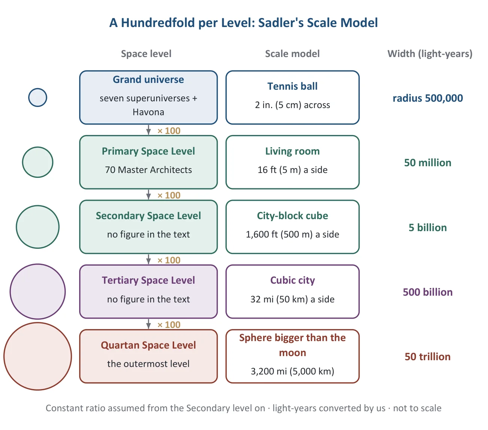

Original : Annexe XVI, Grandeurs de l’espace physique (et de la masse) du maitre univers (p. 381–388)
Le Livre d’Urantia n’indique jamais directement la taille du maitre univers, mais il laisse çà et là des distances et des masses qui peuvent servir de points de départ à un calcul. Sadler rassemble ces indices et s’en sert pour estimer les dimensions du grand univers et des quatre niveaux d’espace extérieur. Son hypothèse clé est que chaque niveau d’espace, en allant vers l’extérieur, est régulièrement cent fois plus large que celui qu’il entoure. Quand on transpose les résultats en objets de la vie courante, d’une balle de tennis à une sphère plus grande que la lune, on perçoit concrètement combien diffèrent par leur échelle l’arène où émerge l’Être Suprême et celle où émerge Dieu l’Ultime.
Sadler commence par recueillir ce que dit le texte de la distance et de la masse. Pour la distance, son point de départ est Orvonton. Selon les révélateurs, les systèmes habités les plus extérieurs se trouvent à un peu moins de deux-cent-cinquante-mille années-lumière du siège du superunivers [32:2.11]. Sadler prend ce chiffre comme rayon du superunivers et fixe donc son « diamètre transversal », l’étendue qui le traverse de son bord extérieur à son bord intérieur, à environ 500 000 années-lumière. Au-delà s’étend une ceinture de quiétude.
Entre les circuits d’énergie des sept superunivers et cette gigantesque ceinture extérieure de forces en activité, il y a une zone d’espace comparativement calme dont la largeur varie, mais représente en moyenne quatre-cent-mille années-lumière.12:1.14
Plus loin, l’activité de la force croit régulièrement sur une étendue de plus de vingt-cinq-millions d’années-lumière. En supposant que l’intensité décroit ensuite sur une distance égale à celle où elle a augmenté, Sadler estime que le premier niveau extérieur mesure environ cinquante-millions d’années-lumière de large. Le texte ajoute qu’à plus de cinquante-millions d’années-lumière au-delà, on a détecté une activité qui annonce un deuxième niveau d’espace extérieur [12:1.15].
Les données sur la masse révèlent combien l’espace extérieur est déjà lourd. En raison des corps de gravité obscurs qui l’entourent, Havona pèse plus que les sept superunivers réunis [12:1.10]. Pourtant, la plus grande partie de l’attraction de la gravité du Paradis est consacrée à retenir la matière située au-delà du grand univers.
Ces investigateurs aboutissent à la conclusion étonnante que l’univers central et les sept superunivers qui l’entourent n’emploient présentement que cinq pour cent du fonctionnement actif de l’emprise de gravité absolue du Paradis.12:3.8
dans les univers de l’espace extérieur où nous pouvons déjà identifier le groupement d’au moins soixante-dix-mille agrégats de matière dont chacun est plus grand que n’importe quel superunivers du temps présent.31:10.19
Sadler suppose que ces soixante-dix-mille agrégats appartiennent tous au niveau d’espace primaire et forment le grand amas qui contient les 375 millions de nouvelles galaxies que nos télescopes atteindront un jour [12:2.3]. S’ils se trouvaient dans le deuxième niveau, ces galaxies ne pourraient jamais nous devenir visibles.
En principe, le rayon du grand univers devrait être le rayon de Havona augmenté du diamètre transversal d’un superunivers. Sadler se heurte ici à deux obstacles. Mesurer jusqu’au centre de toutes choses porterait le calcul au-delà de la limite intérieure de l’espace, et le Paradis n’existe pas dans l’espace. De plus, le Livre d’Urantia ne donne aucune dimension de l’univers central.
Sa solution consiste à laisser Havona de côté. Le milliard de mondes de Havona est disposé en sept circuits ordonnés et utilise vraisemblablement son espace avec économie. Orvonton, au contraire, doit faire place non seulement à mille milliards de mondes habités, mais aussi à d’innombrables soleils et satellites et à des nébuleuses turbulentes et tourbillonnantes. Si Orvonton n’était que mille fois plus grand que Havona, le rayon de Havona ne représenterait qu’un dixième de un pour cent du diamètre transversal d’Orvonton. Même si cette estimation était erronée, l’erreur disparaitrait à côté des nombres énormes qui vont bientôt apparaitre.
Sadler fixe donc le diamètre du grand univers à environ un million d’années-lumière et son rayon à environ un demi-million. Pour manier les grands chiffres qui suivent, il établit ensuite une échelle. Si le rayon du grand univers vaut un pouce (environ 2,5 centimètres), le grand univers devient une boule de deux pouces de diamètre, à peu près une balle de tennis un peu petite.
Si l’on met le rayon du grand univers, 500 000 années-lumière, à côté du diamètre transversal du premier niveau, 50 millions, le rapport est de un à cent. À l’échelle de la balle de tennis, cela donne un pouce contre cent pouces (environ 2,5 mètres). Le rayon du grand univers et du premier niveau réunis est alors de 101 pouces, et le diamètre de 202 pouces, près de seize pieds (environ 5 mètres). Sadler invite le lecteur à se représenter un salon à haut plafond d’environ cinq mètres de long, de large et de haut, avec une seule balle de tennis flottant en son centre exact. Combien de ces balles cette pièce pourrait-elle contenir ?
Il appuie cette image sur d’autres indices. Dix Maitres Architectes servent le grand univers, mais soixante-dix servent le niveau d’espace primaire. Et les soixante-dix-mille agrégats de matière, bien qu’ils en soient encore à un stade précoce, mobilisent déjà quatre-vingt-quinze pour cent de la gravité du Paradis ; à mesure qu’ils muriront, cette part dépassera quatre-vingt-dix-neuf pour cent.
À partir d’ici, le texte ne fournit plus de dimensions. Il est clair que les niveaux d’espace s’agrandissent vers l’extérieur, mais on ne peut savoir si le taux de croissance reste constant ou s’accélère. Sadler choisit l’option la plus prudente et suppose qu’il reste constant. Le rapport de un à cent se prolonge alors en un rapport de cent à dix-mille, ce qui donne au deuxième niveau un diamètre transversal d’environ 800 pieds (250 mètres) et un diamètre total d’environ 1 600 pieds (500 mètres). Sadler compare cela à un long pâté de maisons, dresse ce pâté de maisons en forme de cube, suspend le salon en son centre et place la balle de tennis au milieu de la pièce.
En appliquant une fois de plus le même rapport, le diamètre transversal du troisième niveau atteint 80 000 pieds, que Sadler arrondit commodément à seize milles (environ 25 kilomètres), avec un diamètre total de trente-deux milles (environ 50 kilomètres). On peut imaginer une ville à trois dimensions de cinquante kilomètres de long, de large et de haut. Le dernier, le niveau d’espace quaternaire, mesure 1 600 milles de large, et l’ensemble du maitre univers environ 3 200 milles (quelque 5 000 kilomètres) de diamètre. Prenez la lune, qui a environ 2 100 milles de diamètre, agrandissez-la d’à peu près moitié, et la taille est juste.
Sadler vérifie l’effet de la mise à l’écart des niveaux intérieurs. L’addition d’un pouce, de huit pieds et de 808 pieds n’ajoute qu’environ un cinquième de mille à seize milles ; mesuré en diamètre, le total reste inférieur à trente-trois milles. Ce n’est guère plus de un pour cent de 3 200 milles, de sorte que l’approximation est exacte à environ quatre-vingt-dix-neuf pour cent.

| Niveau d’espace | Rapport | Échelle (diamètre transversal) | Objet contenant l’ensemble |
|---|---|---|---|
| Grand univers | 1 | 1 pouce (2,5 cm) | Une balle de tennis un peu petite |
| Niveau d’espace primaire | 100 | 8 pieds (2,5 m) | Un salon de 5 m de côté |
| Niveau d’espace secondaire | 10 000 | 800 pieds (250 m) | Un cube de la taille d’un pâté de maisons, de 500 m de côté |
| Niveau d’espace tertiaire | 1 million | 16 milles (25 km) | Une ville cubique de 50 km de côté |
| Niveau d’espace quaternaire | 100 millions | 1 600 milles (2 500 km) | Une sphère de 5 000 km de diamètre, plus grande que la lune |
Tous les chiffres de cette annexe reposent sur deux hypothèses. Premièrement, la largeur de cinquante-millions d’années-lumière du niveau d’espace primaire provient d’un argument de symétrie : l’intensité de la force décroit sur la même distance que celle où elle a augmenté, vingt-cinq-millions d’années-lumière. Deuxièmement, à partir du niveau secondaire, une augmentation constante de largeur d’un facteur cent détermine tout. Le texte n’affirme ni l’une ni l’autre. Sadler a néanmoins choisi la voie la plus prudente ; si le rapport augmente en réalité, le maitre univers réel sera bien plus grand que cela. Convertie en années-lumière, son hypothèse donne au niveau quaternaire un diamètre transversal de cinquante billions d’années-lumière (notre conversion).
Pour l’essentiel, le Livre d’Urantia raconte l’histoire du grand univers pendant le deuxième âge de l’univers. Sadler clôt l’annexe sur cette remarque : l’émergence expérientielle de la Suprématie est une fonction du grand univers, tandis que l’émergence de l’Ultimité exige tout cela et, en plus, le développement des quatre niveaux d’espace extérieur. Une seule balle de tennis et une seule sphère plus grande que la lune : telle est la différence entre les arènes où émergent ces deux Déités.